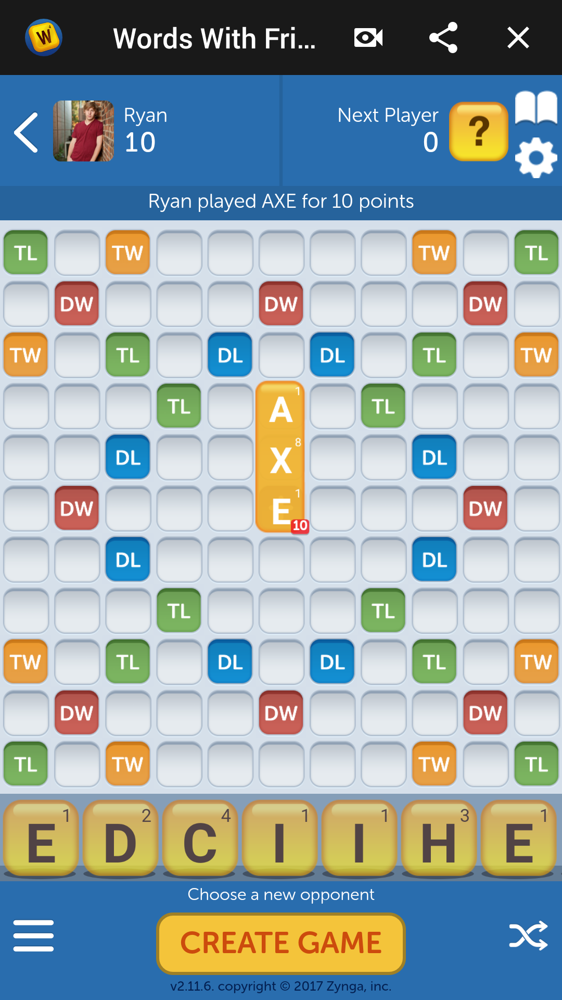

The game that I played this week was called Puzzle and Dragons. It is notable for being the first mobile game to gross over $1 billion dollars, which it did in 2014. This is due to its large popularity in Asia; though it is not unpopular here, it did not take off quite the same way. This is not the first time that I have played Puzzle and Dragons; however, I have not touched it in at least a year, so coming back to it still felt rather fresh. To be honest, it is definitely my favorite freemium game that I have ever played. It has a nice balance of the addictive random card collection seen in many freemium games, as well as a really solid core gameplay loop. The general way that the game is played is: you assemble a team of five monsters, with one as the leader. Each monster has one or two elemental attributes. The meta game involves you collecting many of these monsters and combining them to boost their strength and earn them new abilities. Then, in the actual game, it is a match 3 style, where each color you match corresponds to the colors that could potentially be on your monsters, and the damage you deal to monsters you fight corresponds to what colors you matched and how many. However, the match 3 is way more intense than any other game I have played. In Puzzle and Dragons, instead of just swapping adjacent gems like in Bejeweled, or moving the gem along its like either vertically or horizontally, like in REDACTED, you pick up a gem and can move it anywhere (within a very short time limit), swapping with each gem it moves on its path. This allows really exciting and dynamic gameplay. I have played a lot of this game and paid no money. I would highly recommend it.
I also played Words with Friends this week. It was also fun, but I do not have as much to say about it; it is just really accessible scrabble, which is a board game that I have always enjoyed. It is nice for classic puzzle and strategy games to be available on mobile.

I have mixed opinions on the rise of mobile and casual gaming. I think that in general, it is probably positive. It is a great space for developers to grow and learn. It also has a lot of opportunity in terms of innovation; though maybe less these days. That being said, due to the relatively lower cost of creating a quality mobile app, really neat gameplay ideas have been developed in this space that probably would not have appeared in another – the game Monument Valley comes to mind. Innovation seems to have slowed down a little recently, but what do I know. I think that the more people playing games, the better. In theory. The reason that I might argue that this is actually debasing games and making the industry worse overall in the business models and the game quality. Yes, I think there are tons of really excellent games on mobile. But, and this is a big but, I do not necessarily think that all of these are the best representation of what games have to offer. When I first began playing mobile games, I had a relatively negative experience. I tried out most of the games there were popular, and did not find them very engaging, or found myself getting tired of them quickly. My experience with beginning console gaming was not like that at all. Sure, I had to pay more for a game to begin with, but, when I did, I never had to endure a worse experience. The developers also never had an incentive to make the game worse just to try and draw money out of me. Mobile games suffer because their developers due so, and I think that it may negatively hurt people's opinions of games as a medium, which I think is really unfortunate, because there are games out there that have really made a big impact on my life, and I would like for other people to have experiences like that too. Another negative is that now, we see these negative aspects of mobile games creeping into console and PC games too. I would much rather pay for a good experience then keep paying for an incrementally better one. Lots of people have said this better than I have, but man, it is unfortunate to deal with things like loot boxes.